Desktop Application
Standalone Windows app — no Python or setup required. Unzip, keep the files
together, and run ICU_Early_Warning_System.exe. It ships with 400
demo patients pre-loaded and demo logins (see the
Application User Guide page).
ICU_Early_Warning_System_win64.zip
Download
Report & Source Code
ICU_Decision_Support_System_2026.pdf
Download
Source code on GitHub
View on GitHub
Notebooks
Rendered as static HTML — open directly, no Jupyter install needed.
ICU_Risk_Final.ipynb
View
ICU_Risk_Analysis.ipynb
View
ICU_Risk_Analysis_v2.ipynb
View
Documentation
Project README
View
Model ↔ Frontend Integration Guide
View
Data
COMPLETE_ICU_RISK_DATASET.csv
Download
experiment_log.csv
Download
experiment_log_final.csv
Download
Additional figures
Supplementary visualizations from earlier notebook iterations, in addition to the figures already shown on the Data & EDA, Methodology, and Results pages.
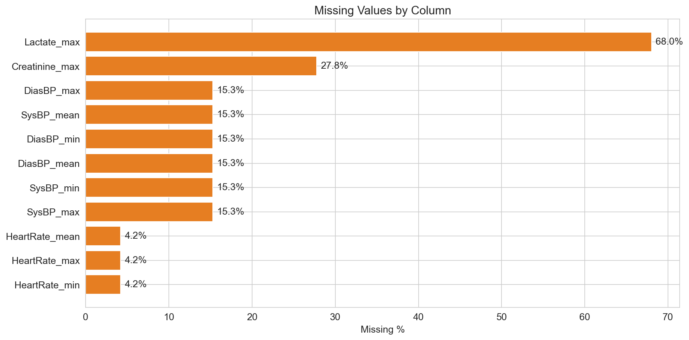
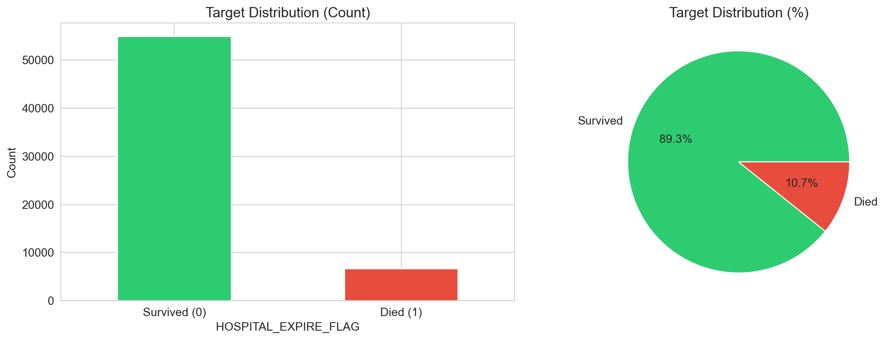
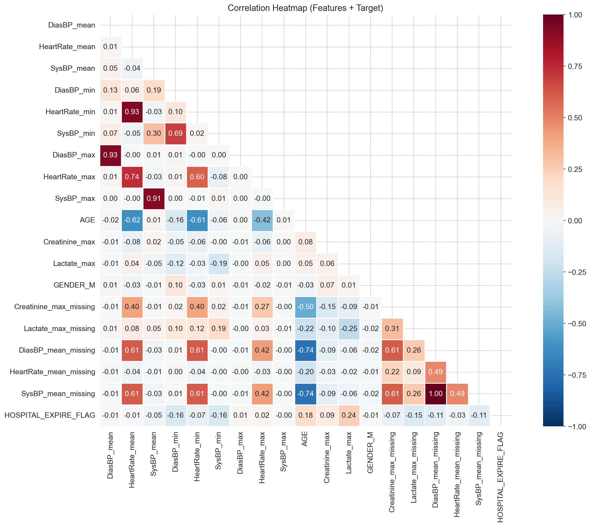
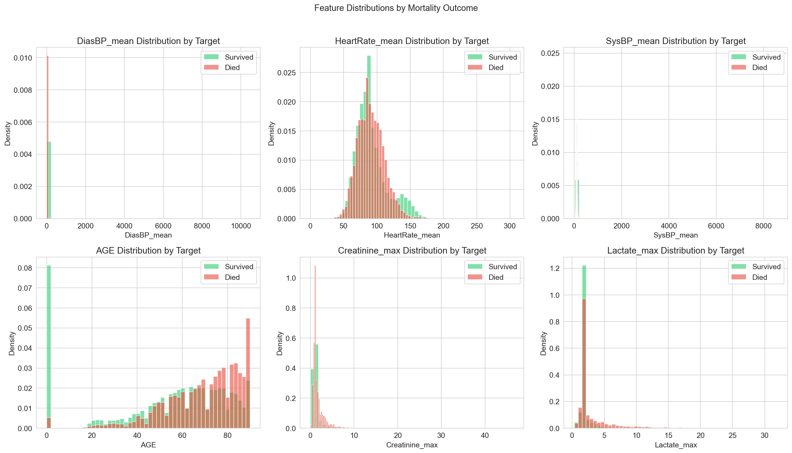
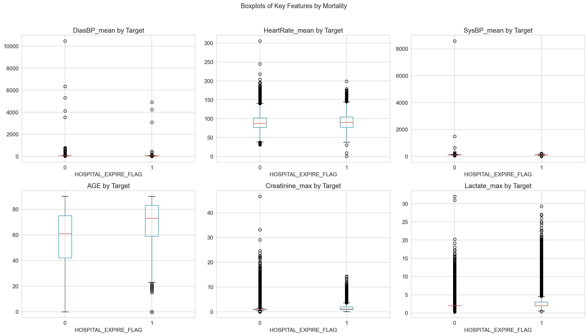
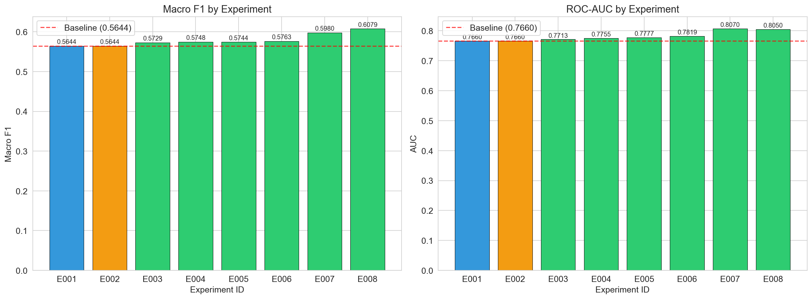
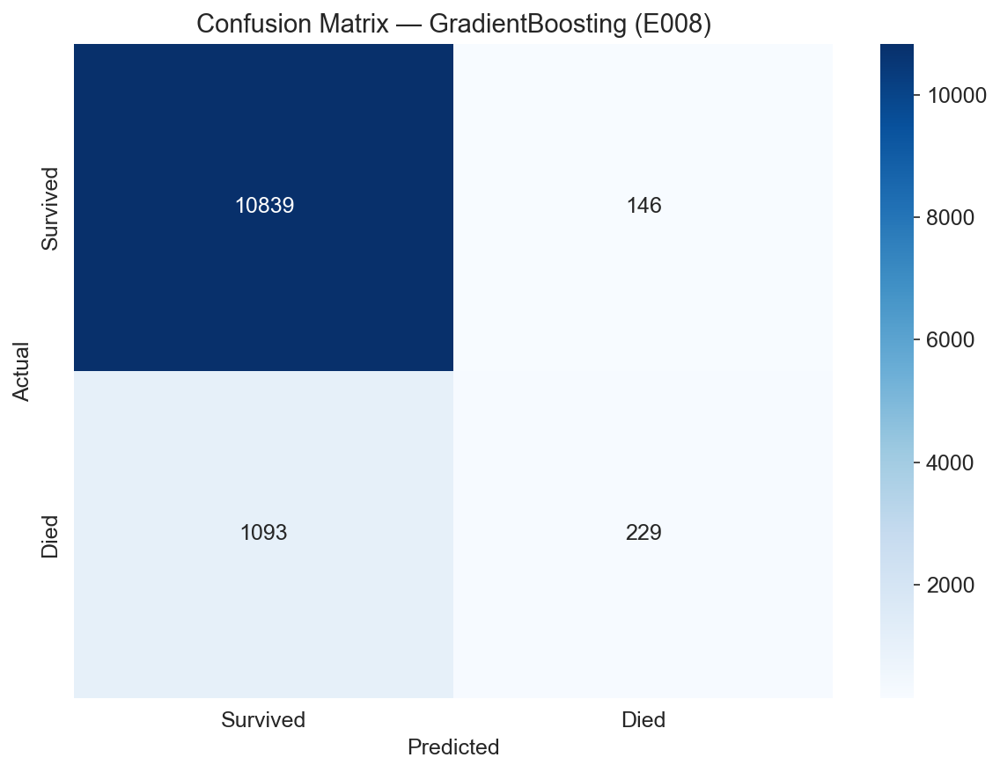
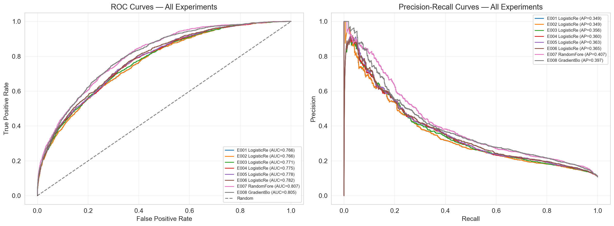
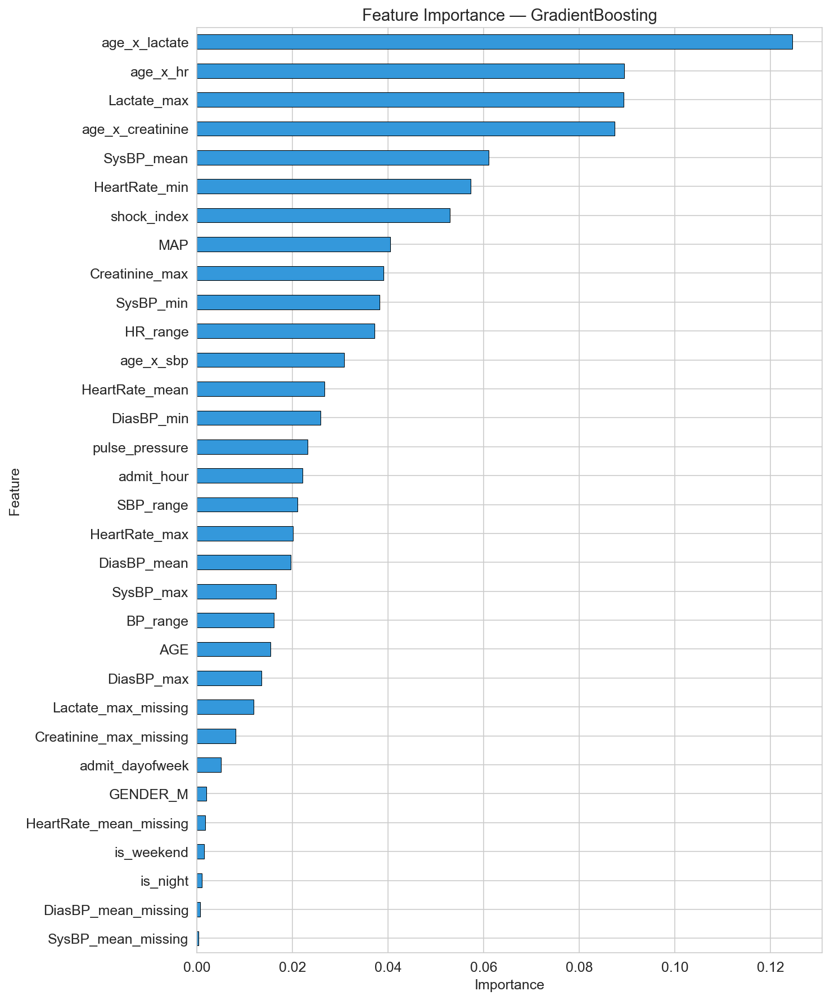
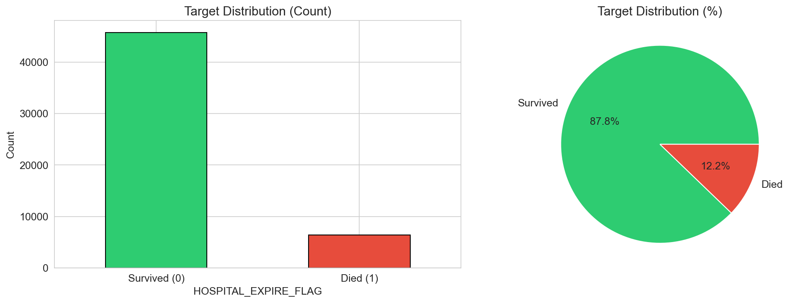
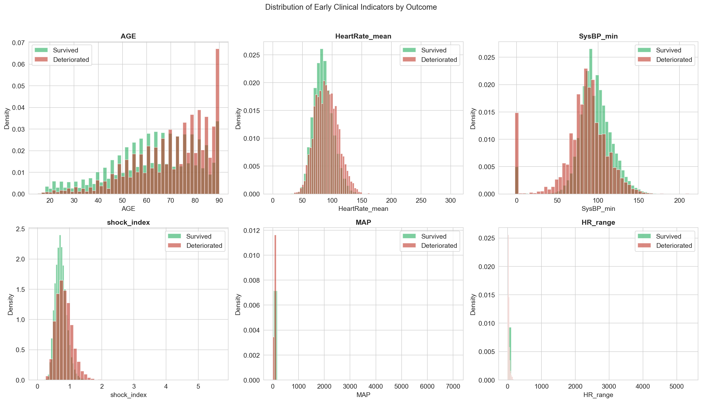
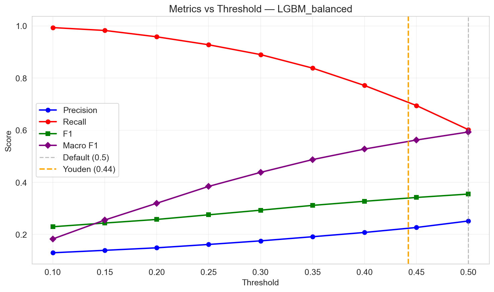
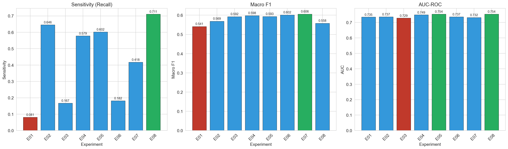
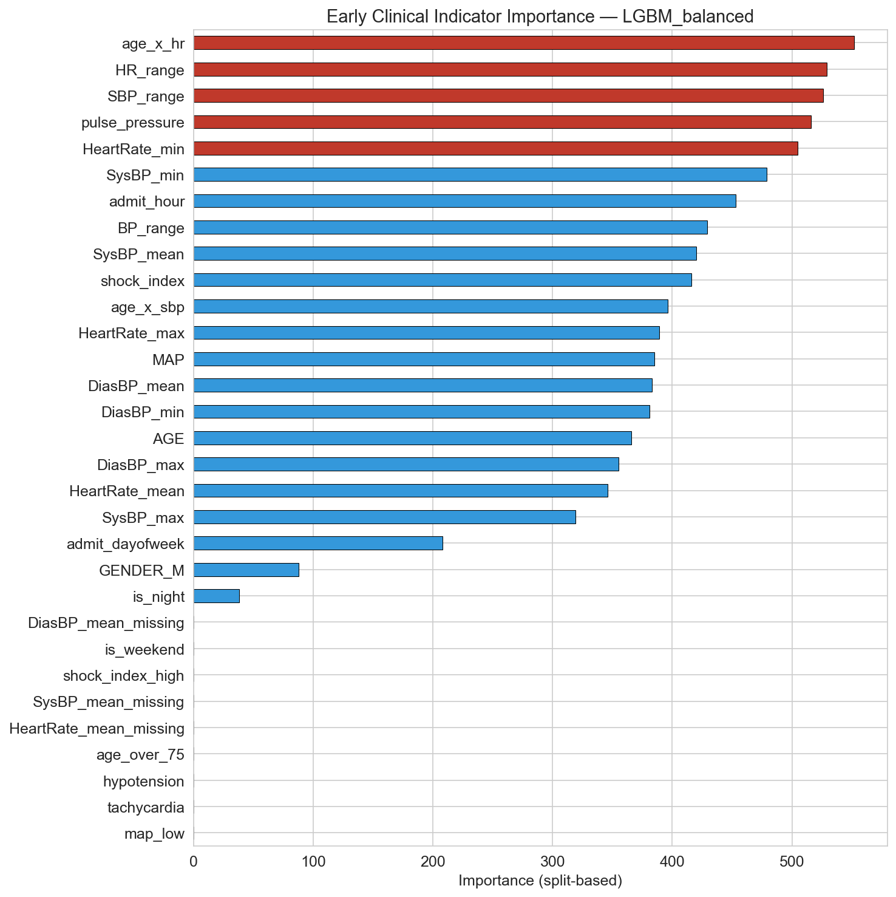